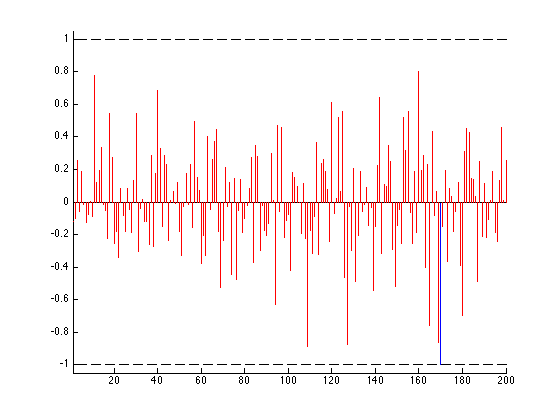
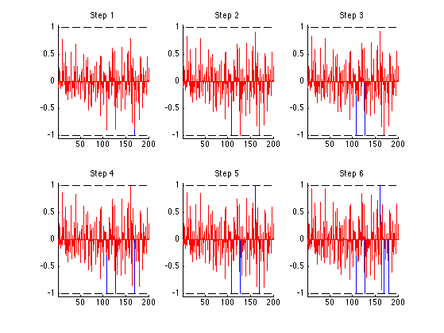
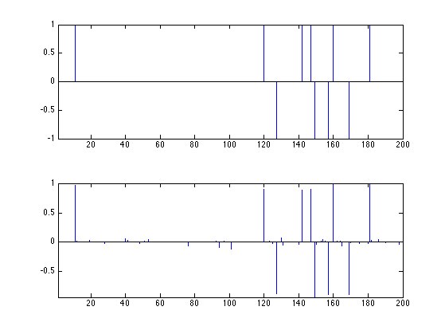
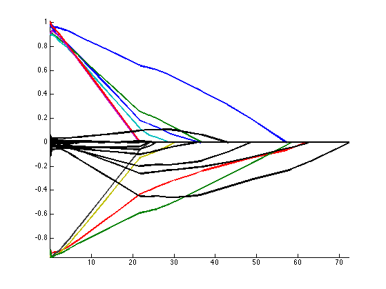
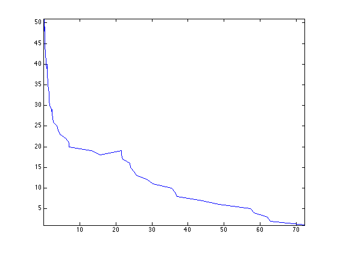
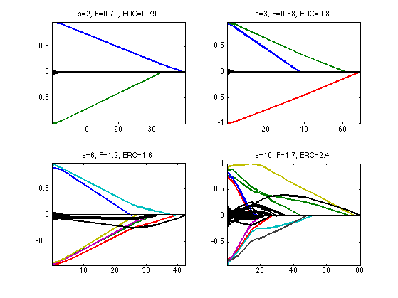

Homotopy Continuation
This numerical tour details the homotopy algorithm to solve \(\ell^1\) regularization.
Contents
Installing toolboxes and setting up the path.
You need to download the following files: signal toolbox and general toolbox.
You need to unzip these toolboxes in your working directory, so that you have toolbox_signal and toolbox_general in your directory.
For Scilab user: you must replace the Matlab comment '%' by its Scilab counterpart '//'.
Recommandation: You should create a text file named for instance numericaltour.sce (in Scilab) or numericaltour.m (in Matlab) to write all the Scilab/Matlab command you want to execute. Then, simply run exec('numericaltour.sce'); (in Scilab) or numericaltour; (in Matlab) to run the commands.
Execute this line only if you are using Matlab.
getd = @(p)path(p,path); % scilab users must *not* execute this
Then you can add the toolboxes to the path.
getd('toolbox_signal/'); getd('toolbox_general/');
\(\ell^1\) Regularization
We consider the following linear inverse problem \[ y = \Phi x_0 + w \in \RR^P\] where \(x_0 \in \RR^N\) is the (unknown) signal to recover, \(w \in \RR^P\) is a noise vector, and \(\Phi \in \RR^{P \times N}\) models the acquisition device.
Size of the problem.
N = 200; P = round(N/4);
We consider here a simple compressed sensing scenario where the operator \(\Phi\) is a realization of a Gaussian random matrix.
Phi = randn(P,N);
Sparsity of the input data.
s = round(P/5);
Sparse vector.
I = randperm(N); I = I(1:s); x0 = zeros(N,1); x0(I) = sign(randn(s,1));
Noise level.
sigma = 0.05 * norm(Phi*x0)/sqrt(P);
Measurements \(y=\Phi x_0 + w\).
y = Phi*x0 + sigma*randn(P,1);
To recover an approximation of the signal \(x_0\), we use the Basis Pursuit denoising method, that use the \(\ell^1\) norm as a sparsity enforcing penalty \[ x_\la \in \uargmin{x \in \RR^N} \frac{1}{2} \norm{y-\Phi x}^2 + \la \norm{x}_1 \quad (\Pp_\la), \] where the \(\ell^1\) norm is defined as \[ \norm{x}_1 = \sum_i \abs{x_i}. \]
The parameter \(\la\) should be set in accordance to the noise level \(\norm{w}\).
In the case where there is no noise, \(w=0\), we let \(\la \rightarrow 0^+\) and solve the Basis Pursuit constrained optimization \[ x_{0^+} \in \uargmin{\Phi x= y} \norm{x}_1. \]
In order to avoid technical difficulties, we assume that \(\Phi\) is such that \(x_\la\) is uniquely defined. This is the case with probability 1 when \(\Phi\) is a realization of a Gaussian matrix field.
In the following, for some index set \(I \subset \{1,\ldots,N\}\), we denote \[ \Phi_I = (\phi_i)_{i \in I} \in \RR^{P \times \abs{I}} \] the sub-matrix obtained by extracting the columns \(\phi_i \in \RR^P\) of \(\Phi\) indexed by \(I\). The support of a vector is \[ \text{support}(x) = \enscond{i \in \{1,\ldots,N\}}{ x_i \neq 0 }. \]
Standard results from convex analysis shows that \(x_\la\) is a solution of \(\Pp_\la\) if and only if \[ \choice{ \text{(C1)} \qquad \Phi_I^*( y-\Phi_I x_{\la,I} ) = \la \text{sign}(x_{\la,I}), \\ \text{(C2)} \qquad \norm{ \Phi_{J}^*( y-\Phi_I x_{\la,I} ) }_\infty \leq \la } \] where \(I=\text{support}(x_\la)\) and \(J = I^c\) is the complementary.
Homotopy Algorithm
The homotopy algorithm computes the solution \(x_\la\) for all values of \(\la \in \RR^+\). More precisely, it can be shown that \[ \la \in \RR^+ \mapsto x_\la \in \RR^N \] is a piecewise affine map, and the homotopy algorihtm computes the solution vectors \[ x_{\la_1},\ldots,x_{\la_K} \qwhereq 0^+ = \la_K < \ldots < \la_{1} \] at the breakpoints \((x_{\la_k})_k\) of this piecewise affine path.
This algorithm was introduced in the over-determined setting in:
Michael R. Osborne, Brett Presnell, and Berwin A. Turlach. On the lasso and its dual. Journal of Computational and Graphical Statistics, 9:319?337, 2000.
It is extended to an arbitrary matrix \(\Phi\) in:
Dmitry M. Malioutov, Mujdat Cetin, and Alan S. Willsky. Homotopy continuation for sparse signal representation. In IEEE Int. Conf. Acoustics, Speech and Signal Processing, Philadelphia, PA, volume 5, pages 733?736, March 2005.
This algorithm is closely related to the LARS algorithm, that is an approximate method:
Bradley Efron, Trevor Hastie, Iain M. Johnstone, and Robert Tibshirani. Least angle regression. The Annals of Statistics, 32(2):407?499, 2004.
A theoretical analysis of the homotopy algorithm when the dictionary \(\Phi\) is incoherent is performed in:
David L. Donoho, Yaakov Tsaig, Fast Solution of l1-Norm Minimization Problems When the Solution May Be Sparse. IEEE Transactions on Information Theory 54(11): 4789-4812, 2008.
For large values of \(\la>\la_1\), the solution is \(x_\la = 0\). The solution \(0\) satisfies the constraints (C2) until \[ \la = \la_1 = \norm{ \Phi^* y }_\infty \] The support is then a single Dirac \[ I(x_\la) = \{i_0\} \qwhereq \abs{\dotp{\phi_{i_0}}{y}} = \norm{ \Phi^* y }_\infty. \]
We thus initialize the algorithm with this value of \(\la=\la_1\) and \(I\), together with the solution \(x_\la=0\).
C = Phi'*y; [lambda,I] = max(abs(C)); x = zeros(N,1);
One Iteration of the Algorithm
The algorithm proceeds by computing iteratively the value of \(x_\la\) at the breakpoints \((\la_k)_k\) for increasing values of \(k>1\).
We suppose we are at iteration \(k\) and have compute the solution \(x_\la\) at \(\la=\la_k\). For small values of \(\ga>0\), the solution \(x_{\la-\ga}\) is supported on the fixed support \(I\) that has already been computed.
Compute \(J=I^c\) the complementary support.
J = setdiff(1:N, I);
Compute the correlations \(c=\Phi^*(y-\Phi x_\la)\).
c = Phi'*(y-Phi*x);
If \(c=0\), the algorithm should stop. In practice, one can test if norm(c)<1e-6.
We can display the correlations \(c\) to check that conditions C1 and C2 are enforced for \(x_\la\).
clf; hold on; stem( I, c(I)/lambda, 'b.' ); stem( J, c(J)/lambda, 'r.' ); plot([1 N], [1 1], 'k--'); plot([1 N],-[1 1], 'k--'); axis([1 N -1.05 1.05]);
The mapping \(\ga \mapsto x_{\la-\ga} \in \RR^N\) is affine as long as long as \(\text{sign}(x_{\la-\ga}) \) is constant equal to \(s\) defined as \[ s_I = \text{sign}(c_I) \qandq s_J=0 \]
sI = sign(c(I));
Since the sign of the solution is constant equal to \(s_I\), under the condition that \(\Phi_I^* \Phi_I\) is invertible, the equation C1 shows that the solution can be expressed as \[ x_{\la-\ga,I} = \Phi_I^+y - (\la-\ga)(\Phi_I^* \Phi_I)^{-1}s_I \] and hence one can compute explicitly \(x_{\la-\ga}\) from the knowledge of \(x_{\la}\) \[ x_{\la-\ga} = x_{\la} + \ga d \qwhereq d_I = (\Phi_I^* \Phi_I)^{-1}s_I, \qandq d_J=0. \]
Compute the update direction \(d\).
d = zeros(N,1); d(I) = (Phi(:,I)'*Phi(:,I)) \ sI;
A useful vector \(v = \Phi_I d_I\).
v = Phi(:,I)*d(I);
This affine expression of \(x_{\la-\ga}\) is valid for \(\la \leq \la-\ga \leq \la-\ga^\star\), where \(\ga^\star>0\) is the smallest \(\ga\) such that one of the following three even happens:
Event 1. condition C2 is violated because of saturation at +1: \[ \exists j \in J, \quad \dotp{\phi_j}{ y-\Phi_I x_{\la-\ga,I} } = +1 \] This condition is equivalent to \[ \exists j \in J, \quad \ga = \frac{\la - c_j}{1-\dotp{\phi_j}{v}}. \]
Compute \(\ga_1\), the minimum \(\ga>0\) so that event 1 happens.
w = ( lambda-c(J) ) ./ ( 1 - Phi(:,J)'*v ); gamma1 = min(w(w>0)); if not(isempty(gamma1)) i1 = J( w==gamma1 ); end
Event 2. condition C2 is violated because of saturation at -1: \[ \exists j \in J, \quad \dotp{\phi_j}{ y-\Phi_I x_{\la-\ga,I} } = -1 \] This condition is equivalent to \[ \exists j \in J, \quad \ga = \frac{\la + c_j}{1+\dotp{\phi_j}{v}}. \]
Compute \(\ga_2\), the minimum \(\ga>0\) so that event 2 happens.
w = ( lambda+c(J) ) ./ ( 1 + Phi(:,J)'*v ); gamma2 = min(w(w>0)); if not(isempty(gamma2)) i2 = J( w==gamma2 ); end
Event 3. \( \text{sign}(x_{\la-\ga,I})\) changes because one coordinate vanishes: \[ \exists i \in I, \quad x_{\la-\ga,I} = 0 \] This condition is equivalent to \[ \exists i \in I, \quad \ga = -\frac{x_{\la,i}}{d_i} \]
Compute \(\ga_3\), the minimum \(\ga>0\) so that event 3 happens.
w = -x(I)./d(I); gamma3 = min(w(w>0)); if not(isempty(gamma3)) i3 = I( w==gamma3 ); end
Compute the minimum \[ \ga^\star = \min(\ga_1,\ga_2,\ga_3) >0\] so that any of these three events happens:
gamma = min([gamma1 gamma2 gamma3]);
Update the solution \[ x_{\la-\ga} = x_{\la} + \ga d. \]
x = x + gamma*d;
Update the value of \(\la\), to define the next breakpoint location \[ \la_{k+1} = \la_{k} - \ga \]
lambda = lambda - gamma;
Update the support \(I\) by either adding or removing an index.
if gamma==gamma1 I = [I i1]; elseif gamma==gamma2 I = [I i2]; elseif gamma==gamma3 I(I==i3) = []; end
The Full Algorithm
We are now ready to implement the full algorithm.
Exercice 1: (check the solution) Implement the full homotopy algorithm. Record in X(:,i), Lambda(i), Sparsity(i) respectively the solution \(x_\lambda\), the value of \(\lambda\) and the size of the support \(I\) at step i of the algorithm.
exo1;
Display the signal to recover and the signal recovered with \(\la=0^+\). Note how the noise impact the recovered vector. This is because choosing \(\la=0^+\) does not produce denoising.
clf; subplot(2,1,1); x1 = x0; x1(x1==0) = NaN; stem(x1, 'b.'); axis tight; subplot(2,1,2); x1 = x; x1(x1==0) = NaN; stem(x1, 'b.'); axis tight;
Display the evolution of each entry of \(x_\la\) (different colors) with \(\la\). We display the evolution of the correct components (those indexed by the support \(I\) of \(x_0\)) in color, and the wrong components (indexed by \(J=I^c\)) in black.
clf; I = find(x0~=0); J = setdiff(1:N,I); clf; hold on; h = plot(Lambda, X(I,:)', '-'); set(h, 'LineWidth', 2); h = plot(Lambda, X(J,:)', 'k-'); set(h, 'LineWidth', 2); axis tight;
Note how the noise enters into the signal (wrong selected indices) for small \(\la\). Selecting a \(\la\) proportional to the noise level \(\la\) ensures that \(x_\la\) has the correct support and is close to \(x_0\).
Display the evolution of the sparsity \(\norm{x_\la}_0\) with \(\la\). Note that this sparsity is not necessarily increasing, because when event 3 happens, one element leaves the support.
clf; plot(Lambda, Sparsity, '.-'); axis tight;
Remarks: the LARS (Least Angle Regression) algorithm is an approximate algorithm that only allows the support to increase, thus forgetting about the events of type 3. Its complexity is the same as OMP (Orthogonal Matching Pursuit).
Exercice 2: (check the solution) Test the algorithm for \(x_0\) of varying sparsity \(s\). What can you conclude in term of noise robustness ?
exo2;